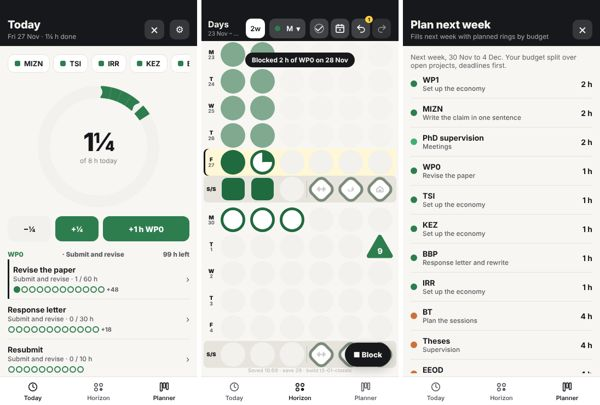
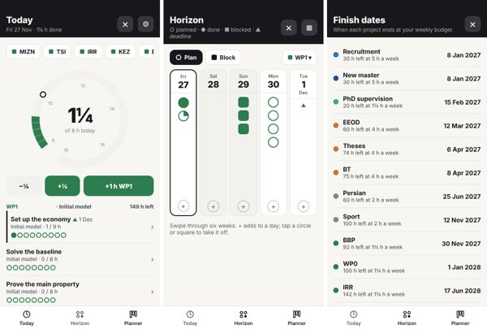
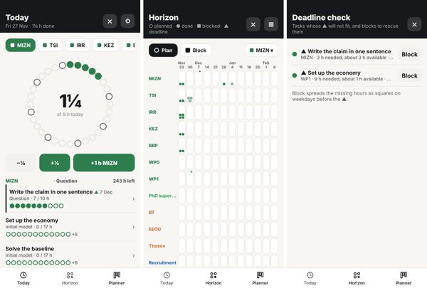
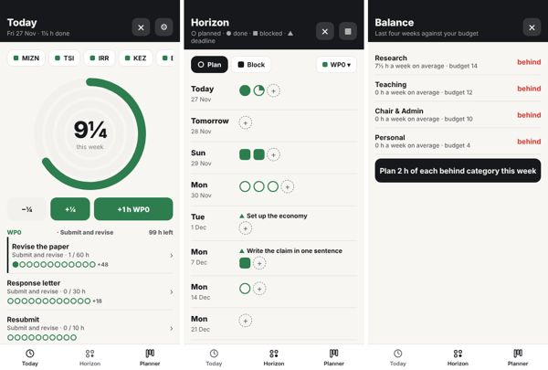
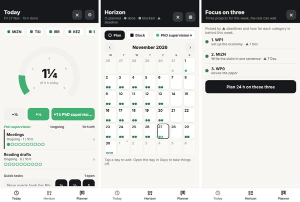
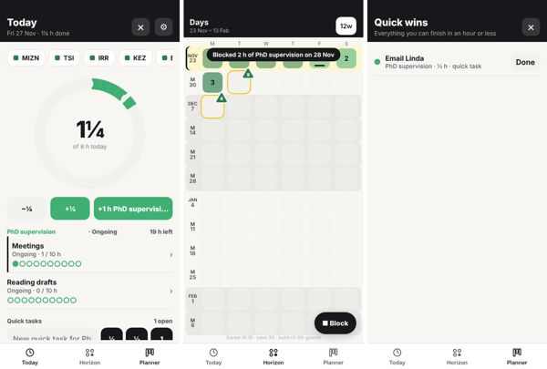
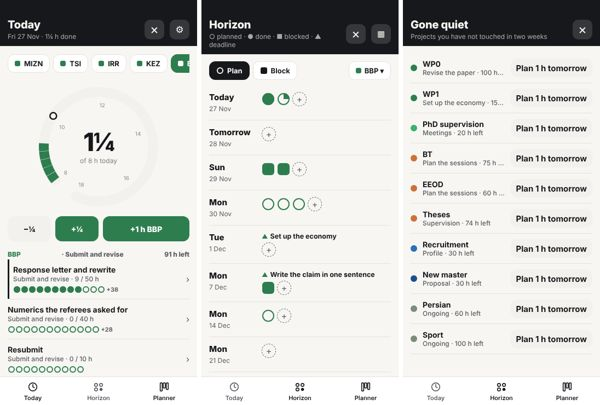
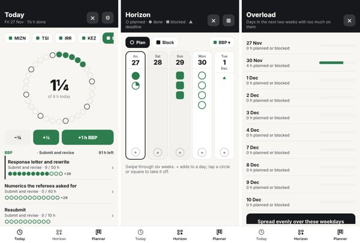
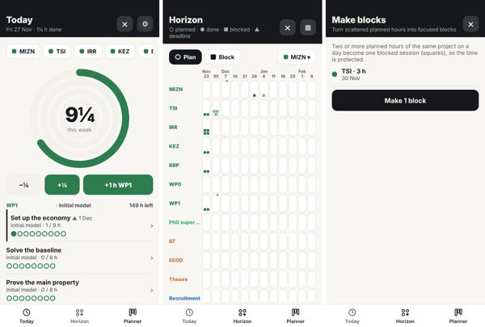
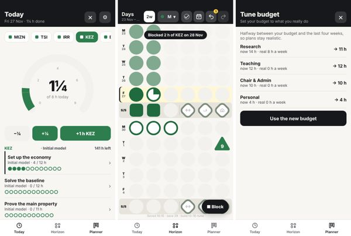

Ten versions in your original Hours design. Each copies your Hours data on first open, then keeps its own. Screens: Today, Horizon, the Planner suggestion.

01ClassicToday's ring of 8 hours, Horizon as your Days grid with a Block button, Planner plans next week for you.
02ClockA working-day clock from 8 to 18, a swipeable strip of six weeks, finish dates per project.
03QuartersToday as 32 quarter dots, Horizon as project lanes over 12 weeks, a deadline check that blocks rescue time.
04RingsToday as this week's category rings, Horizon as a calm agenda, Planner checks your balance.
05GaugeA gauge filling up to 8 hours, a month calendar, and three projects to focus on.
06GlanceRing of 8 hours, Horizon opens on 12 weeks, Planner lists quick wins under an hour.
07SteadyWorking-day clock, agenda ahead, and projects that have gone quiet.
08FlowQuarter dots, a smooth six-week strip, and overloaded days spread out.
09BlocksCategory rings, project lanes, and planned hours turned into protected blocks.
10TuneGauge for today, your Days grid with Block, and a budget tuned to what you really do.